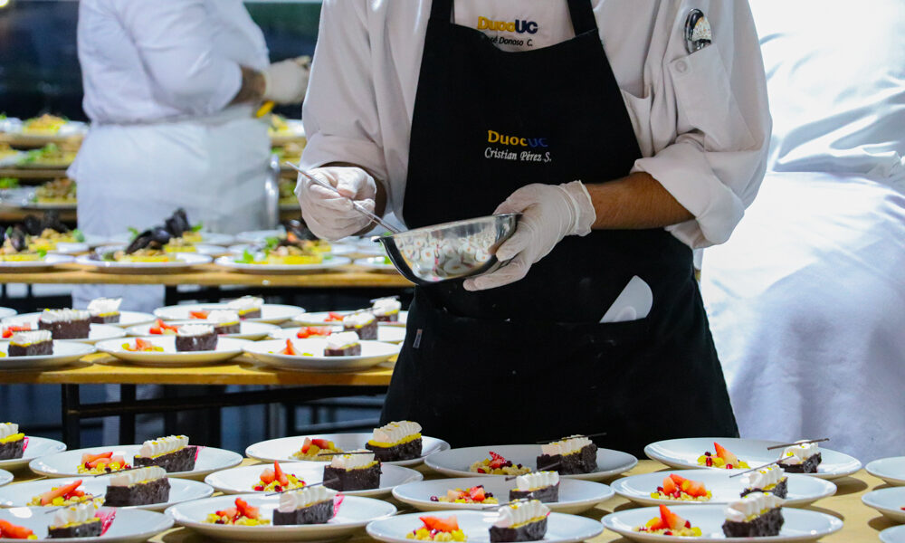

Apoyando a los Futuros Chefs de Duoc UC
En Pastelería Mil Sabores, creemos que la mejor manera de honrar nuestro legado es invirtiendo en el futuro. Por eso, nuestra colaboración con los talentosos estudiantes de gastronomía de Duoc UC es uno de los pilares de nuestra filosofía.
Esta alianza va más allá de una simple práctica profesional. Es un intercambio de conocimiento, pasión y creatividad. Los estudiantes traen a nuestra cocina las técnicas más innovadoras y una perspectiva fresca, mientras que nosotros compartimos con ellos los secretos de la repostería tradicional que hemos perfeccionado durante 50 años.
Un Círculo Virtuoso de Sabor
Cada temporada, un grupo selecto de estudiantes trabaja codo a codo con nuestros maestros pasteleros para desarrollar nuevos productos. Muchos de los postres que ves en nuestra sección de "Postres Individuales" nacieron de estas sesiones creativas. Ellos experimentan con sabores, texturas y presentaciones, y nosotros les proporcionamos la guía y los ingredientes de la más alta calidad para que sus ideas cobren vida.
Cuando compras en Pastelería Mil Sabores, no solo te llevas un producto delicioso; también te conviertes en parte de este ciclo. Cada compra ayuda a financiar becas y a proporcionar recursos para estos futuros chefs, asegurando que la tradición de la alta repostería en Chile siga floreciendo.
Volver al Blog